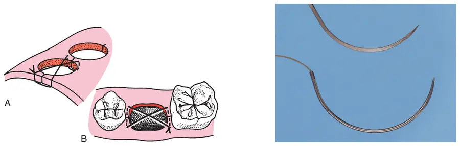

نسخه استخراجشده؛ ترجمه یا تأیید علمی انجام نشده است. وضعیت: captured
کنترل اولیهی خونریزی حین جراحی روتین، به بهدست آوردن کنترل همهی عواملی بستگی دارد که ممکن است خونریزی را طولانی کنند.

۱) تکنیک آتروماتیک. جراحی باید تا حد ممکن آتروماتیک باشد، با برشهای تمیز و مدیریت ملایم بافت نرم. و یک دلیل مشخص: باید مراقب بود بافت نرم له نشود، چون بافت لهشده تمایل دارد برای مدت طولانیتری ترشح کند.
۲) استخوان. خارهای استخوانی تیز باید صاف یا برداشته شوند.
۳) بافت گرانوله. بافت گرانوله باید از ناحیهی پریاپیکال ساکت و از دور گردن دندانهای مجاور و فلپهای بافت نرم کورتاژ شود.
ولی یک استثنای مهم: این کار باید به تعویق بیفتد وقتی محدودیتهای آناتومیک مثل سینوس یا کانال آلوئولار تحتانی در نزدیکی باشند. — یعنی کورتاژ پریاپیکال بیمحابا میتواند خودش یک عارضهی تازه بسازد.
۴) شریانهای بافت نرم. زخم باید با دقت برای وجود هر شریان خونریزیدهندهی مشخص بررسی شود. اگر چنین شریانهایی در بافت نرم وجود داشته باشند، باید با فشار مستقیم کنترل شوند، یا اگر فشار شکست خورد، با گیره کردن شریان با هموستات و لیگاتور کردنش با یک بخیهی غیرقابل جذب.
۵) و خونریزی از خودِ استخوان — یک مانور ساده و هوشمندانه: جراح باید خونریزی از استخوان را هم بررسی کند. گاهی یک رگ کوچک و منفرد از یک سوراخ استخوانی خونریزی میکند. در این صورت، سوراخ میتواند با انتهای بستهی یک هموستات له شود و رگ خونریزیدهنده را مسدود کند.
وقتی این تدابیر انجام شدند، ساکت خونریزیدهنده با یک اسفنج گاز مرطوب پوشانده میشود که تا کرده شده تا مستقیماً در ناحیهای که دندان از آن کشیده شده جا بگیرد. بیمار دستکم ۳۰ دقیقه محکم روی این گاز گاز میگیرد.
و حالا قاعدهای که ارزش قانونی و بالینی همزمان دارد: جراح نباید بیمار را از مطب مرخص کند تا وقتی هموستاز به دست آمده باشد.
و این چه چیزی میطلبد؟ یک بازبینی ساختاریافته:
پس ساختار زمانی روشن است: سی دقیقهی اول، سپس یک بازرسی، سپس سی دقیقهی دوم. بازرسی میانی همان چیزی است که اغلب حذف میشود — و همان است که خونریزی مداوم را زود پیدا میکند.
و اگر خونریزی ادامه یابد؟ اگر بازرسی دقیق ساکت انجام شود و خونریزی همچنان ادامه داشته باشد، نوبت به مواد هموستاتیک میرسد — که موضوع درس بعدی است.